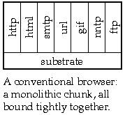
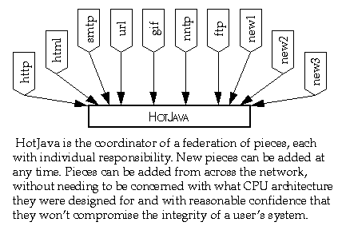
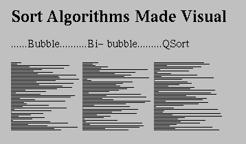

Next Prev Contents
The HotJava World-Wide Web Browser
- 9.1 - The Evolution of Cyberspace
-
- 9.2 - Freedom to Innovate
-
- 9.3 - Implementation Details
-
- 9.4 - Security
-
- 9.5 - HotJava--the Promise
-
It's a jungle out there,
So drink your Java
T-shirt caption from Printer's Inc Cafe, Palo Alto, California
The HotJava€ Browser ("HotJava") is a new World-Wide Web browser implemented entirely in the Java programming language. HotJava is the first major end-user application created using the Java programming language and its run-time system as a base. HotJava not only showcases the powerful features of the Java environment, it also provides an ideal platform for distributing Java programs across the Internet--the most complex, distributed, heterogeneous network in the world.HotJava and its rapidly growing Web population of Java language programs called applets (mini-applications), are the most compelling demonstration of the dynamic capabilities of Java.
HotJava includes many innovative features and capabilities above and beyond the first generation of static Web browsers. HotJava is extensible. Its foremost feature is its ability to download Java programs (applets) from anywhere, even across networks, and execute them on the user's machine. HotJava builds on the network-browsing techniques established by Mosaic and other Web browsers and expands them by adding dynamic behavior that transforms static documents into dynamic applications.
HotJava goes far beyond the current generation of statically-oriented Web browsers and brings a much needed measure of interactivity to the concept of the Web browser. It transforms the existing static data display of current generation Web browsers into a new and dynamic viewing system for hypertext, described below. It enables creation and display of animation-oriented applications. World-Wide Web content developers can have their applications distributed across the Internet with the click of a button on the user's client computer.
9.1 The Evolution of Cyberspace
The Internet has evolved into an amorphous ocean of data stored in many formats on a multiplicity of network hosts. Over time, various data storage and transmission protocols have evolved to impose some order on this chaos. One of the fastest growing areas of the net--the one we're primarily interested in here--is the World-Wide Web (WWW), which uses a hypertext-based markup system to enable users to navigate their way across the oceans of data.
The concept of hypertext is by no means new, but its realization has spanned decades. The idea behind hypertext was described in an essay by Vannevar Bush in 1945, and evangelized by Theodore (Ted) Nelson in the 1960s and 1970s. Although Apple Computer's HyperCard product for Macintosh provided an early if somewhat primitive implementation, the real power of hypertest comes from the ability to create inter-document links across multiple host computers on the network. The first practical if small implementation of a network-based hypertext system was created by Tim Berners-Lee at CERN, using the NEXTSTEP development environment to create what would blossom into HTML (HyperText Markup Language), HTTP (HyperText Transport Protocol), and the WWW (World-Wide Web, or W3).
Web browsers combine the functions of fetching data with figuring out what the data is and displaying it if possible. One of the most prevalent file formats browsers deal with is HyperText Markup Language, or HTML-- a markup language that embeds simple text-formatting commands within text to be formatted. The main key to the hypertext concept is HTML's use of links to other HTML pages either on the same host or elsewhere on the Internet.
A user in search of gold mining data, for instance, can follow links across the net from Mountain View, California, to the University of the Witwatersrand, South Africa, and arrive back at commercial data providers in Montreal, Canada, all within the context of tracing links in hypertext "pages". For a topic of timely relevance to the World-Wide Web, a user interested in aspects of multimedia law relative to the World-Wide Web can tune in to the home page at www.oikoumene.com/oikoumene for links to intellectual property issues.
9.1.1 First Generation Browsers
 What we could call the "first-generation" Web browsers--exemplified by NCSA Mosaic and the first release of Netscape Navigator--provide an illusion of being interactive. By using the (somewhat limited) language of HTML these browsers provide hypertext links on which you can click. The browser goes off across the network to fetch the data associated with that link, downloads the data, and displays it on your local screen. As we said, this is an illusion of interactivity.
What we could call the "first-generation" Web browsers--exemplified by NCSA Mosaic and the first release of Netscape Navigator--provide an illusion of being interactive. By using the (somewhat limited) language of HTML these browsers provide hypertext links on which you can click. The browser goes off across the network to fetch the data associated with that link, downloads the data, and displays it on your local screen. As we said, this is an illusion of interactivity.
This illustration depicts roughly the "interactive" flow of control in the first-generation Web browsers. As you see, it's not really interactive--it's just a fancy data fetching and display utility.
HotJava brings a new twist to the concept of client-server computing. The general view of client-server computing is a big centralized server that clients connect to for a long time and from which they access data and applications. It is roughly a star with a big server in the middle and clients arrayed around it. The new model exemplified by the World-Wide Web is a wide-spread collection of independent nodes with short-lived connections between clients and many servers. The controlling intelligence shifts from the server to the client and the answer to "who's in charge?" shifts from the server to the client.
The primary problem with the first-generation web browsers is that they're built in a monolithic fashion with their awareness of every possible type of data, protocol, and behavior hard wired in order for them to navigate the Web. This means that every time a new data type, protocol, or behavior is invented, these browsers must be upgraded to be cognizant of the new situation. From the viewpoint of end users, this is an untenable position to be in. Users must continually be aware of what protocols exist, which browsers deal with those protocols, and which versions of which browsers are compatible with each other. Given the growth of the Internet, this situation is clearly out of control.
9.1.2 The HotJava Browser--A New Concept in Web Browsers
HotJava solves the monolithic approach and moves the focus of interactivity away from the Web server and onto the Web client--that is, to the computer on which the user is browsing the Web. Because of its basis in the Java system, a HotJava client can dynamically download segments of code that are executed right there on the client machine. Such Java-based "applets" (mini-applications) can provide full animation, play sound, and generally interact with the user in real time.
HotJava removes the static limitations of the Mosaic generation of Web browsers with its ability to add arbitrary behavior to the browser. Using HotJava, you can add applications that range from interactive science experiments in educational material, to games and specialized shopping applications. You can implement interactive advertising, customized newspapers, and a host of application areas that haven't even been thought of yet. The capabilities of a Web browser whose behavior can be dynamically updated are open-ended.
Furthermore, HotJava provides the means for users to access these applications in a new way. Software migrates transparently across the network as it's needed. You don't have to "install" software--it comes across the network as you need it--perhaps after asking you to pay for it. Content developers for the World-Wide Web don't have to worry about whether or not some special piece of software is installed in a user's system--it just gets there automatically. This transparent acquiring of applications frees content developers from the boundaries of the fixed media types such as images and text and lets them do whatever they'd like.
9.1.3 The Essential Difference
The central difference between HotJava and other browsers is that while these other browsers have knowledge of the Internet protocols hard-wired into them, HotJava understands essentially none of them. What it does understand is how to find out about things it doesn't understand. The result of this lack of understanding is great flexibility and the ability to add new capabilities very easily.
9.1.4 Dynamic Content
One of the most visible uses of HotJava's ability to dynamically add to its capabilities is something we call dynamic content. For example, someone could write a Java program to implement an interactive chemistry simulation, following the rules of the HotJava API. People browsing the net with HotJava could easily get this simulation and interact with it, rather than just having a static picture with some text. They can do this and be assured that the code that brings their chemistry experiment to life doesn't also contain malicious code that damages the system. Code that attempts to be malicious or which has bugs essentially can't breach the walls placed around it by the security and robustness features of Java.
For example, the following is a snapshot of HotJava in use. Each diagram in the document represents a different sort algorithm. Each algorithm sorts an array of integers. Each horizontal line represents an integer: the length of the line corresponds to the value of the integer and the position of the line in the diagram corresponds to the position of the integer in the array.
In a book or HTML document, the author has to be content with these static illustrations. With HotJava the author can enable the reader to click on the illustrations and see the algorithms animate.
If you're running HotJava now, try it and see:
Sort Algorithms Made
Visual
......Bubble..........Bi- bubble.........QSort
Using these dynamic facilities, content providers can define new types of data and behavior that meet the needs of their specific audiences, rather than being bound by a fixed set of objects.
9.1.5 Dynamic Types
HotJava's dynamic behavior is also used for understanding different types of objects. For example, most Web browsers can understand a small set of image formats (typically GIF, X11 pixmap, and X11 bitmap). If they see some other type, they have no way to deal with it. HotJava, on the other hand, can dynamically link the code from the host that has the image allowing it to display the new format. So, if someone invents a new compression algorithm, the inventor just has to make sure that a copy of its Java code is installed on the server that contains the images they want to publish; they don't have to upgrade all the browsers in the world. HotJava essentially upgrades itself on the fly when it sees this new type.
The following is an illustration of how HotJava negotiates with a server when it encounters an object of an unknown type:
9.1.6 Dynamic Protocols
The protocols that Internet hosts use to communicate among themselves are key components of the net. For the World-Wide Web (WWW), HTTP (HyperText Transfer Protocol) is the most important of these communication protocols. Within WWW documents, a reference to another document (even to a document on another Internet host computer) is called a URL, meaning a Uniform Resource Locator. The URL contains the name of the protocol, HTTP, that is used to find that document. Most of the current generation of Web browsers have the knowledge of HTTP built-in. Rather than having built-in protocol handlers, HotJava uses the protocol name to link in the appropriate handler as required, allowing new protocols to be incorporated dynamically.
The dynamic incorporation of protocols has special significance to how business is done on the Internet. Many vendors are providing new Web browsers and servers with added capabilities, such as billing and security. These capabilities most often take the form of new protocols. So each vendor comes up with their unique style of security (for example) and sells a server and browser that speak this new protocol. If a user wants to access data on multiple servers on which each has proprietary new protocols, the user needs multiple browsers. This is incredibly clumsy and defeats the synergistic cooperation that makes the World-Wide Web work.
With HotJava as a base, vendors can produce and sell exactly the piece that is their added value, and integrate smoothly with other vendors, creating a final result that is seamless and very convenient for the end user.
Protocol handlers get installed in a sequence similar to how content handlers get installed: The HotJava Browser is given a reference to an object (a URL). If the handler for that protocol is already loaded, it will be used. If not, the HotJava Browser will search first the local system and then the system that is the target of the URL.
9.2 Freedom to Innovate
Innovation on the Internet follows a pattern: initially: someone develops a technology. They're free to try all kinds of things since no one else is using the technology and there are no compatibility issues. Slowly, people start using it, and as they do, compatibility and interoperability concerns slow the pace of innovation. The Internet is now in a state where even simple changes that everyone agrees will have significant merit are very hard to make.
Within a community that uses HotJava, individuals can experiment with new facilities while at the same time preserving compatibility and interoperability. Data can be published in new formats and distributed using new protocols and the implementations of these will be automatically and safely installed. There is no upgrade problem.
One need not be inventing new things to need these facilities. Almost all organizations need to be able to adapt to changing requirements. TheHotJava browser's flexibility can greatly aid that. As new protocols and data types become important, they can be transparently incorporated.
9.3 Implementation Details
The basic structure of HotJava is instructive. It is easiest understood from the operation of Mosaic.
Mosaic starts with a URL and fetches the object referenced by that URL using the specified protocol. The host and localinfo fields are passed to the protocol handler. The result of this is a bag of bytes that contains the object that has been fetched. These bytes are inspected to determine the type of the data (HTML document or JPEG image, for example). From this type information, code is invoked to manipulate and view the data.
That's all there is to Mosaic. It's essentially very simple. But despite this, the Mosaic program is actually huge since it must contain specialized handlers for all of these data types. It's bundled together into one big monolithic lump.
In contrast, HotJava is very small, since all of the protocol and data handlers are brought in from the outside. For example, when it calls the protocol handler, instead of having a table that has a fixed list of protocols that it understands, HotJava instead uses this type string to derive a Java language class name. The protocol handler for this type is dynamically linked in if it is missing. They can be linked in from the local system, or they can be linked in from definitions stored on the host where the URL was found, or anywhere else on the net that HotJava suspects might be a good place to look. In a similar fashion, HotJava can dynamically locate and load the code to handle different types of data objects and different ways of viewing them.
9.4 Security
Network security is of paramount importance to Internet users, especially with the exponential growth of Internet commerce. Network-based applications must be able to defend themselves against a veritable gallimaufry of network viruses, worms, Trojan horses, and other forms of intruders. This section discusses the layers of defense provided by Java, the Java run-time system, and the higher-level protocols of HotJava itself.
One of the most important technical challenges in building a system like HotJava is making it secure. Downloading, installing,and executing fragments of code importedfrom across the network is potentially an open invitation to all sorts of problems. On the one hand, such a facility provides great power that can be used to achieve very valuable ends; on the other hand, the facility could potentially be subverted to become a breeding ground for computer viruses. The topic of safety is a very broad one and doesn't have a single answer. HotJava has a series of facilities that layer and interlock to provide a fairly high degree of safety.
9.4.1 The First Layer--the Java Language Interpreter
The first layer of security in Java applications come from the ground rules of Java itself. These features have been described in detail in previous chapters in this paper.
When HotJava imports a code fragment, itdoesn't actually know whether or not the code fragment follows Java language rules for safety. As described earlier, imported code fragments are subjected to a series of checks, starting with straightforward tests that the format of the code is correct and ending with a series of consistency checks by the Bytecode Verifier.
9.4.2 The Next Layer--the Higher Level Protocols
Given this base set of guarantees that interfaces cannot be violated, higher level parts of the system implement their own protection mechanisms. For example, the file access primitives implement an access control list that controls read and write access to files by imported code (or code invoked by imported code). The defaults for these access control lists are very restrictive. If an attempt is made by a piece of imported code to access a file to which access has not been granted, a dialog box pops up to allow the user to decide whether or not to allow that specific access.
These access restrictions err on the conservative side, which makes constructing some very useful extensions impossible or awkward. We have a mechanism whereby public keys can be securely attached to code fragments that allows code with trusted public keys to have fewer restrictions. This mechanism isn't in the public release for legal reasons.
9.5 HotJava--the Promise
The HotJava Web browser, based upon the foundations of the Java environment, brings a hitherto unrealized dynamic and interactive capability to the World-Wide Web. Dynamic content, dynamic data types, and dynamic protocols provide content creators with an entirely new tool that facilitates the burgeoning growth of electronic commerce and education.
The advent of the dynamic and interactive capabilities provided by the HotJava Web browser brings the World-Wide Web to life, turning the Web into a new and powerful business and communication tool for all users.
Next Prev Contents
The Java(tm) Language Environment: A White Paper